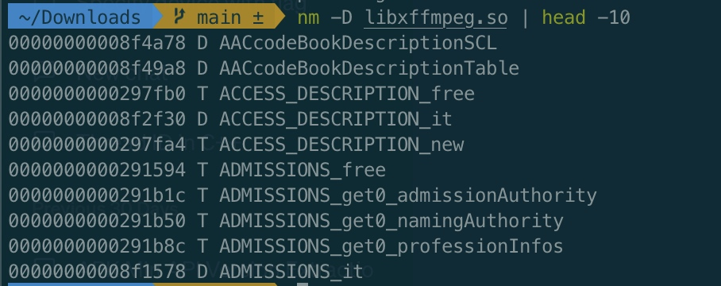
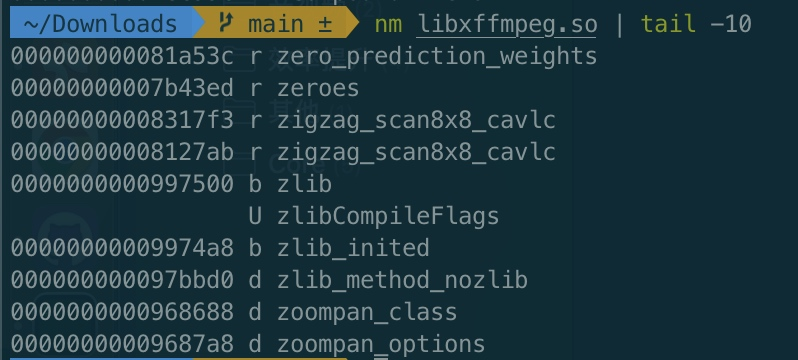
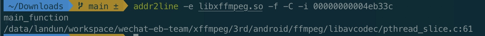
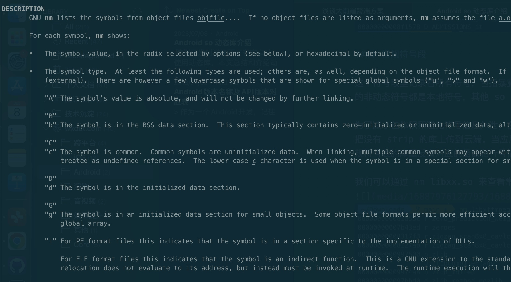

Android so 动态库相关知识
跨端开发时避免不了在安卓端使用动态库，本文总结和介绍动态库的结构、常见分析工具的使用等等。
安卓小游戏大量用到了动态库，在日常工作中逐步对动态库有了较多的接触和理解。但是总感觉不够系统，周末没事总结一下，作为技术沉淀，也希望能给大家带来一些帮助。
so 与 ELF
安卓动态库 so 是 一种 ELF（Executable and Linkable Format）格式的文件，常用于基于 Unix 的机型，比如 Linux，BSD，Android 等等。
在安卓上的动态库格式为 libxxx.so。
段（Sections）
so 包含了若干个段，每个段记录了某一个维度的信息。查看一些 so 的信息，就是查看对应的段里的信息。这里列一下主要的段，以及常用的段分析工具。
我们可以使用 readelf 来查看某个 so 的段信息。
readelf -S libxxx.so
然后使用下面的方式查看这个段的详细信息。
readelf -x .段名字 libxxx.so
不同的 so 可能包含的段也不相同，这里介绍一下常用的需要理解的段。
.dynsym 动态符号段 & .symtab 常规符号段 & .debug_*（DWARF 格式的调试信息）
so 里有两个段和符号相关，分别是常规符号段和动态符号段。平时开发对这两个段的依赖比较多。
.dynsym 动态符号段
动态符号是指被暴露出去的符号，其他 so 链接本 so 后可以访问这些符号。这些符号通常比较少，没有必要暴露的符号要隐藏掉，避免外部滥用，也降低耦合度。
隐藏某个符号可以在源码里给函数加上 __attribute__((visibility("hidden")))。
也可以给 gcc 增加编译参数来默认隐藏所有符号：-fvisibility=hidden，当然也可以使用 version-script 控制符号导出。
至于查看工具，可以使用 nm -D libxx.so 来查看所有动态符号。

.symtab 常规符号段
这个符号段里记录着所有符号，包括暴露的和未暴露的，常规符号表是动态符号表的超集。常规符号表里的非动态符号都是本地符号，其他 so 无法访问和调用这些符号，通常来讲都是用来调试和堆栈还原的。
为了减小包体积和避免符号信息外泄，在打包 release apk 的时候通常会 strip 掉常规符号表，并把没有 strip 的库上传到云端。当应用发生闪退的时候，我们可以根据堆栈里的地址信息去云端包含常规符号表的库里反查对应的函数和行号信息，以便于定位问题。
我们可以通过 nm libxx.so 来查看常规符号表。

.debug_*（DWARF 格式的调试信息）
顾名思义，存储着调试信息，格式为 DWARF。
可以通过 addr2line (路径为ndk/toolchains/llvm/prebuilt/darwin-x86_64/bin/llvm-addr2line）反查某个符号的函数名和行号，都是根据这些 .debug_* 里的信息查出的，这样我们就可以很轻松的定位并解决闪退问题。

符号的基本信息
每一个符号都有三部分组成：偏移、类型、函数签名。
类型
中间的那个字母，大些的代表动态符号，也就是全局符号，小写的代表常规符号，也就是本地符号。至于字母的意思，可以 man nm 看一下。比较多，这里就不枚举了。

函数签名
源码里函数的签名，可以直接搜索源码定位问题函数。
偏移
动态库是 PIC（position-independent code），在 APP 真正加载 so 之前 so 里的符号都不会有虚拟内存地址，只是相对于 so 的偏移。在 APP 运行中动态加载 so 时才会给 so 分配一段内存，so 基地址 + 符号偏移才是该符号在本次 APP 运行时的真实虚拟地址，并且该地址在 APP 本地进程结束之前都不会变。
在 APP 发生闪退时，如果是调用 so 的某个符号时挂了，那这时候的 pc 寄存器就是指向了该符号的虚拟地址 + 该符号内的偏移（一个符号就是一个函数，pc 寄存器指向的是函数内的某一个指令，而非符号头地址）。
通常来讲会有基础的同学自动把闪退堆栈里的地址减去 so 基地址，这样我们看到的堆栈地址就是相对于 so 本身的偏移了，然后就可以通过 addr2line 找到对应的函数（符号）和行号（符号内偏移）。
.text
包含本 so 的可执行代码。
.data & .bss
.data 段包含已初始化的全局变量和静态变量；
.bss 段包含未初始化的全局变量和静态变量；
.rodata
包含一些只读的变量，比如常量或字符串。
.comment
记录一些 so 相关的信息，对 so 本身的功能没有任何影响，主要是用来塞入一些上下文信息。比如编译版本、时间等等。
转载请注明出处：Android so 动态库相关知识 - 专业点
欢迎关注我的公众号

推荐

公众号推荐
欢迎关注我的公众号一起愉快的交流。